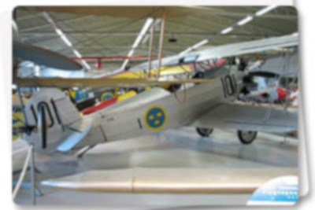
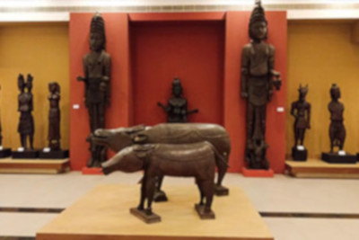
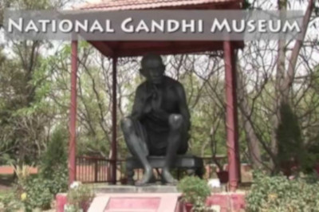
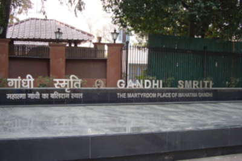
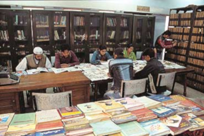
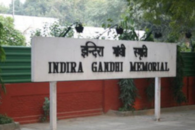
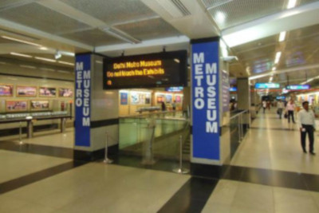
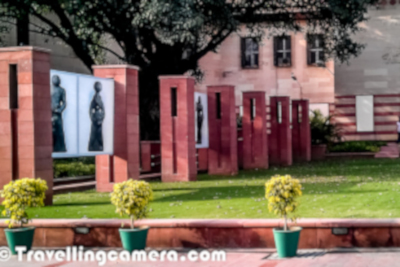
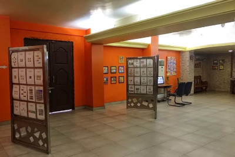

Museums
1. Air Force Museum

A collection of aeroplanes & armoury depicts the history of the Indian Air force & has a vast collection of aeroplanes and armoury on display.
Closed: Monday & Tuesday.
Timing: 10.00am to 5.00pm
Location: Palam, Delhi Cantonment. New Delhi-110 010
2.Craft Museum

The National Handicrafts and Handlooms Museum, popularly known as the Crafts Museum, celebrates the rich, diverse, and practising craft traditions of India. Situated in a large campus at the corner of Pragati Maidan, opposite the majestic Purana Qila, the museum was designed by the renowned architect Charles Correa.
Closed: Monday and National Holidays.
Timing: Galleries 10am to 5pm
Location: Bhairon Road, Pragati Maidan, New Delhi.
3. Gandhi Museum

Opposite Raj Ghat is the Gandhi Museum. Dedicated to the Father of the Nation, the museum contains some of his personal belongings. There are five pavilions one can go through that comprise of sculpture, photographs and paintings of Gandhi and the history of the Satyagraha movement as well as the philosophy of 'ahinsa' (non-violence).
Closed: Monday
Timing: 10.00am To 5:30 pm
Location: Opposite Raj Ghat, Ring Road, Delhi.
4. Gandhi Smriti

The residence of industrialist BD Birla has been converted into a memorial to Mahatma Gandhi, where he used to stay during his visits to Delhi. Gandhiji was assassinated here on his way to offer customary evening prayers. Large collection of photographs with a few personal belongings and a series of small dolls houses and terracotta dolls illustrating Gandhijis' life are the attractions at this museum. Multi-media show is also held between 1:00 pm to 1:30pm
Closed: Monday
Timing: 10.00am to 5.00pm
Location: 5, Tees January Lane, Birla House, New Delhi.
5. Ghalib Academy

Inaugurated in 1969 by Late Dr. Zakir Hussain, the then President of India, the museum has been established in memory of great Urdu poet Mirza Asadullah Khan Ghalib. The academy has a museum dedicated to Ghalib showcasing statue, photographs, books and important documents of his age. It also has an art gallery where paintings made by famous & eminent artists like Satish Gujral, M. F. Hussain and others are on display.
Closed: Sunday
Timing: 10.00am to 6.00pm
Location: Basti Hazrat Nizamuddin, New Delhi.
6. Indira Gandhi Memorial

Indira Gandhi Memorial Museum was the residence of the former Prime Minister of India. It was later converted into a museum. One can see the collection of rare photographs of the Nationalist movement, the personal moments of the Nehru-Gandhi family and her childhood.
Closed: Monday
Timing: 9.30am To 5:00 pm
Location: No. 1, Safderjang Road, New Delhi- 110 011.
7. Metro Museum

South Asia's first modern Metro Museum, showcasing the Delhi Metro, has been opened in New Delhi, the only such installation worldwide.The Metro Museum at Patel Chowk Metro station comes as a New Year gift to the citizens of Delhi and showcases the genesis, history and journey of the Delhi Metro Rail Corporation (DMRC). India's first modern public transportation system, the Delhi Metro has revolutionized travel by providing a fast, reliable, safe and comfortable means of transport in the city characterized by rickety vehicles and unreliable operators
Closed: Monday
Timing: 10 AM to 4 PM
Location: Metro Museum, Patel Chowk
8. National Gallery of Modern Art

Established in the year 1954, this is the best place to explore Indian contemporary art. The royal building of the museum was formerly the residence of erstwhile Maharajas of Jaipur. It houses a splendid collection of paintings, some of which are as old as 150 years! The painting treasure housed here includes the 19th and early-20th century paintings of British artists, Thomas Daniell, and his nephew, William.
Closed: Monday
Timing: 10:00am To 5:00 pm
Location: Jaipur House, India Gate, Near Delhi High Court
9. National Children's Museum
A completely different and exciting world for Children in Delhi is the National Children's Museum in Bal Bhawan Complex on Kotla Marg. Designed on a unique note of understanding child psychology better, this museum is made exclusively for children and it aims at educating the children about India's culture, tradition and life. The museum has a large collection of dolls, toys, traditional jewellery, art and craft material, and currency from various countries.
Closed: Sunday & Monday
Timing: 9.00am To 5:30 pm
Location: 1 Kotla Road, Near I.T.O.
10. National Philatelic Museum

Situated near Connaught Place, is Dak Bhawan which has a post office with an outlet for philatelists interested in Indian stamps. The building also houses the National Philatelic Museum which has an extensive stamp collection including the first stamp issued in India by the Sindh Dak (1854) and stamps issued before Independence by the rulers of the Princely States. Free entry passes can be had from Parliament Street Head Post office basement.
Closed: Saturday & Sunday
Timing: 10:00 am to 5:00 pm.
Location: Dak Bhavan, Sardar Patel Chowk, Sansad Marg,